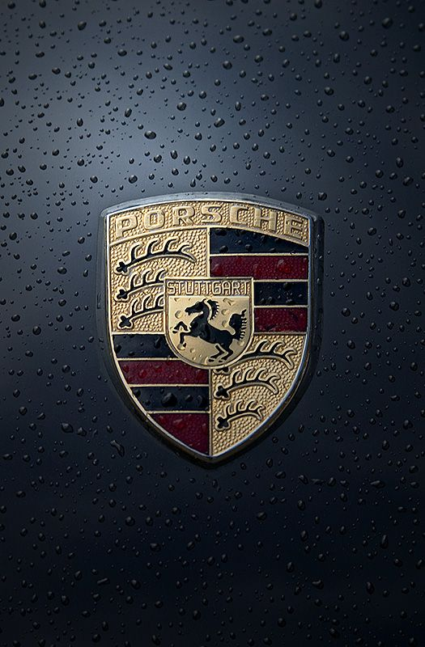
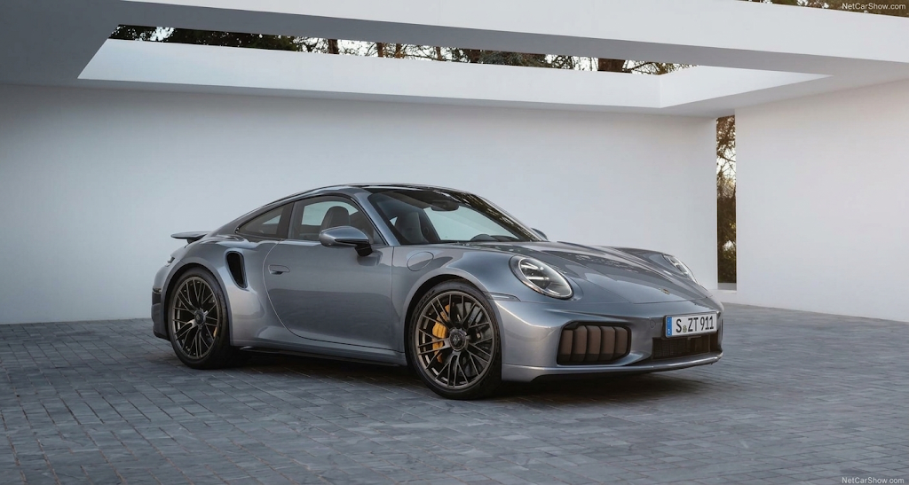
1- Porsche 911
O ícone atemporal da marca alemã, famoso por seu design inconfundível, motor boxer traseiro de alto desempenho e precisão dinâmica de condução.
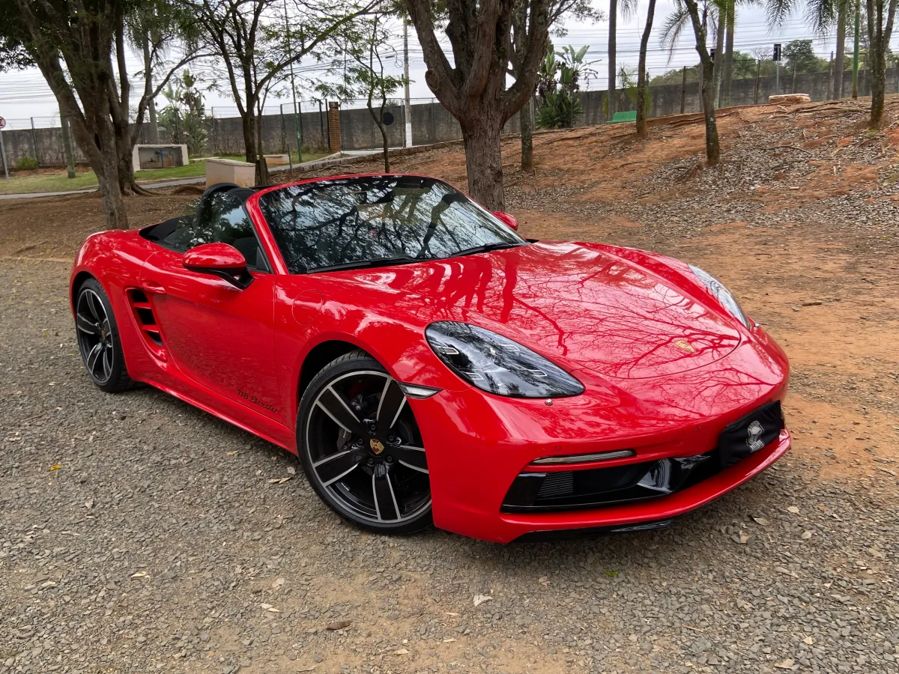
2- Porsche 718 Boxster
O roadster de motor central-traseiro que combina agilidade excepcional, teto conversível e a pura sensação de liberdade ao dirigir.
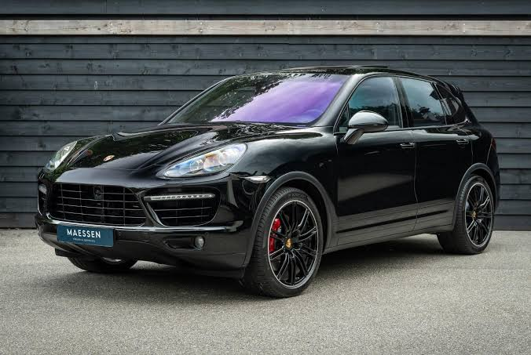
3- Porsche Cayenne
O SUV de luxo que revolucionou o mercado ao unir a praticidade e espaço de um utilitário com a verdadeira alma esportiva da Porsche.
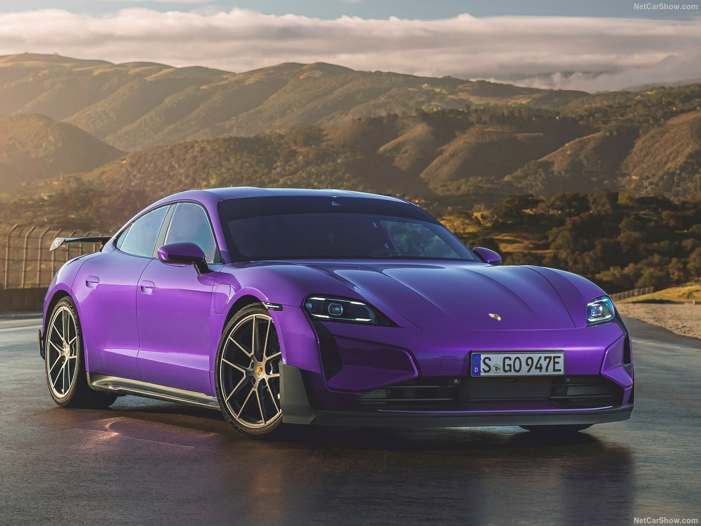
4- Porsche Taycan
O primeiro esportivo 100% elétrico da fabricante, combinando aceleração instantânea, arquitetura de 800V e design futurista.
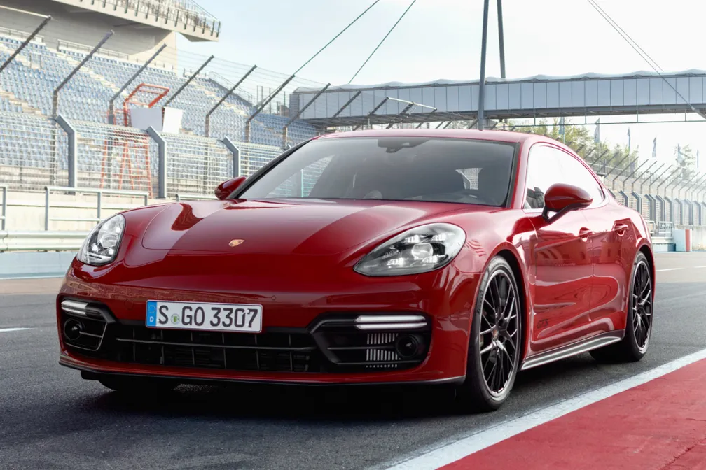
5- Porsche Panamera
O sedan esportivo de luxo que une performance excepcional na pista ao conforto de classe executiva no dia a dia.
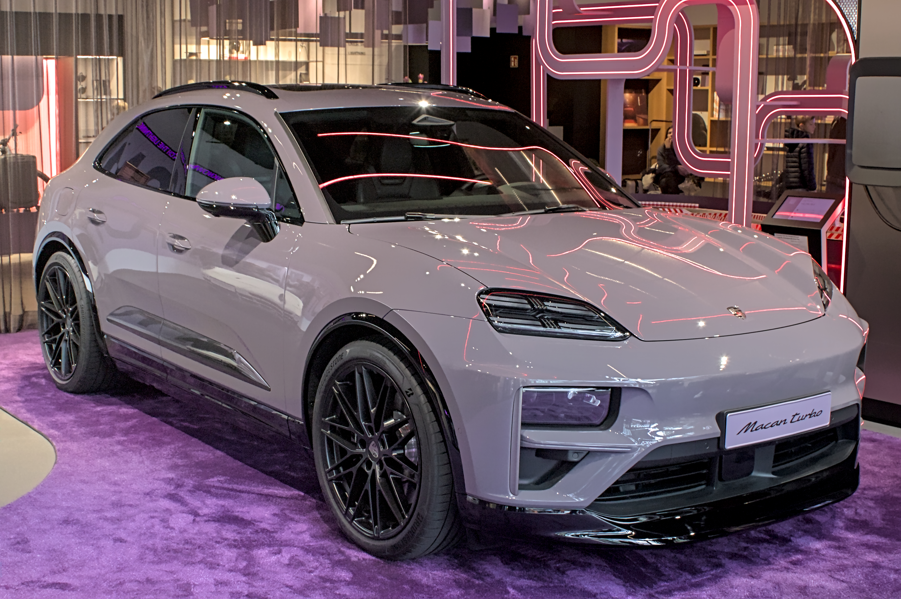
6- Porsche Macan
O SUV compacto que entrega dirigibilidade de esportivo com versatilidade para o cotidiano urbanos e viagens.
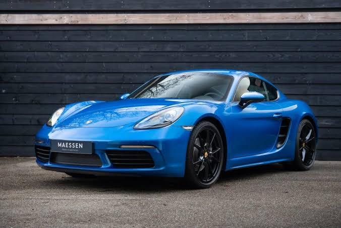
7- Porsche 718 Cayman
O cupê de motor central perfeito para quem busca máxima precisão em curvas e foco total no desempenho puro.
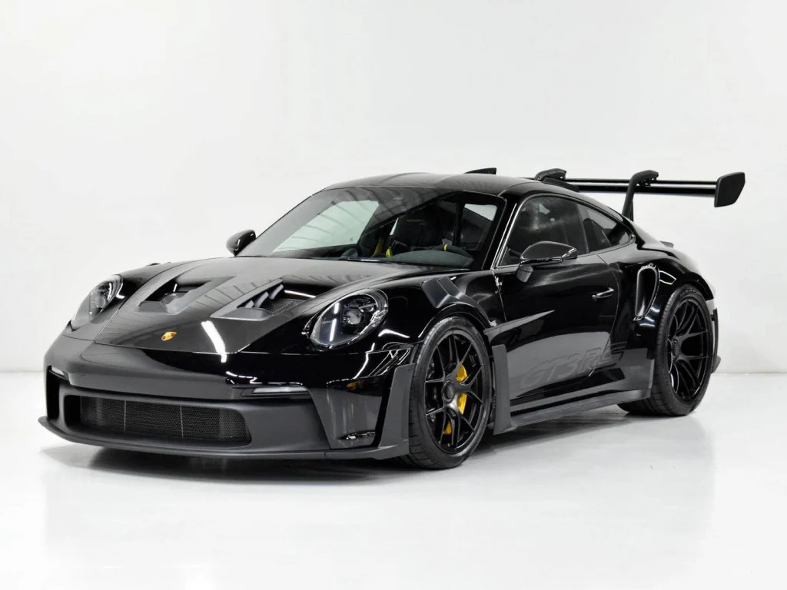
8- Porsche 911 GT3 RS
A máquina projetada para as pistas, homologada para as ruas, com aerodinâmica extrema e motor aspirado.
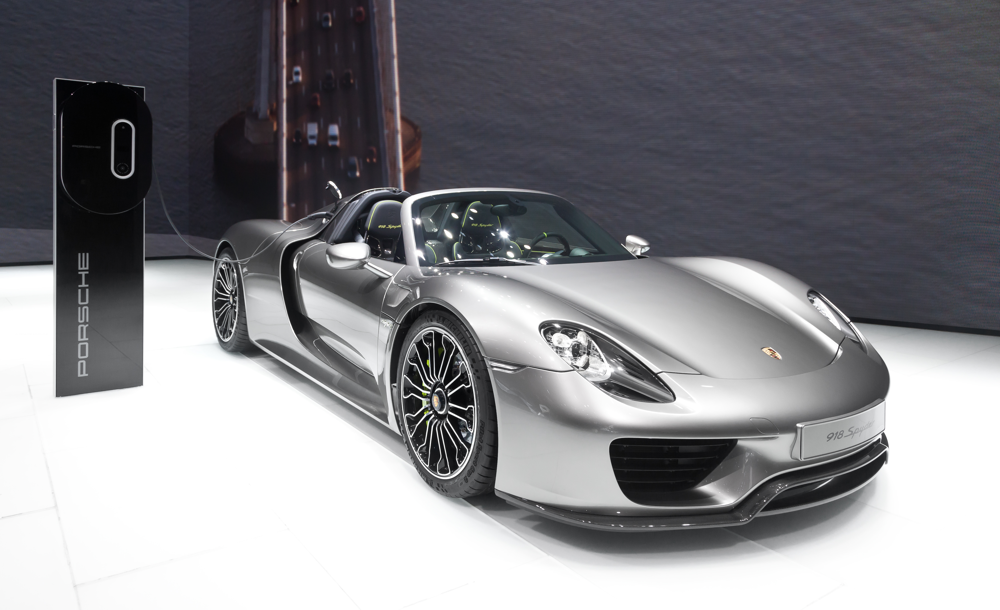
9- Porsche 918 Spyder
O hipercarro híbrido lendário que redefiniu os limites de tecnologia, velocidade e eficiência energética.
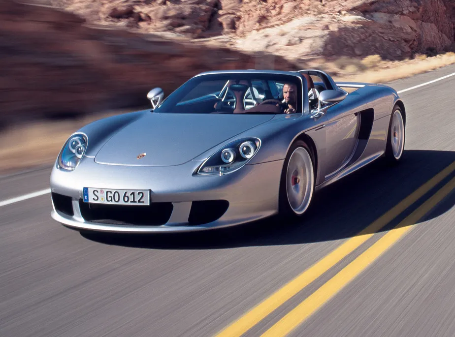
10- Porsche Carrera GT
Um dos supercarros analógicos mais aclamados da história, alimentado por um estrondoso motor V10.
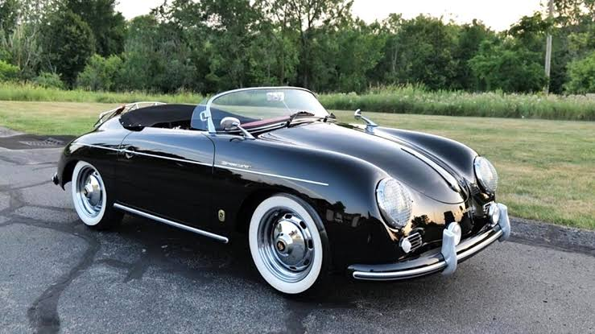
11- Porsche 356
O primeiro modelo de produção em série da Porsche, responsável por estabelecer o DNA de design lendário da marca.
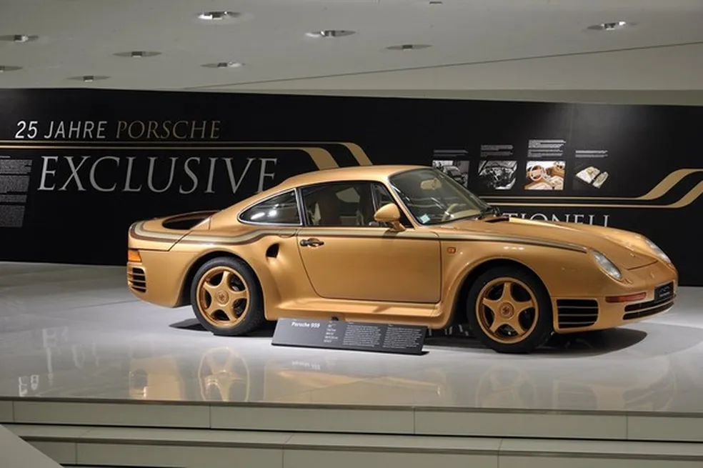
12- Porsche 959
O pioneiro tecnológico dos anos 80 com tração integral avançada que pavimentou o futuro dos supercarros modernos.